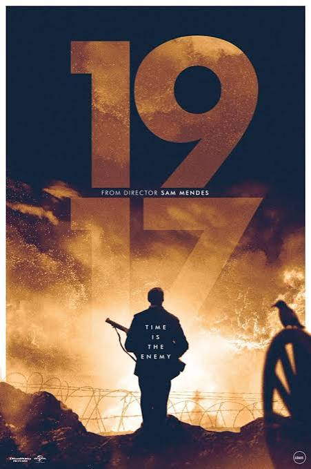

Indicado a Melhor Filme no Oscar 2020

1917 é um filme de guerra de 2019 dirigido por Sam Mendes. A história se
passa durante a Primeira Guerra Mundial e acompanha dois soldados ingleses,
Schofield e Blake, que recebem a missão de entregar uma mensagem que pode
salvar 1.600 soldados de uma armadilha alemã. O filme é famoso por ter sido
gravado como se fosse um único plano-sequência, sem cortes visíveis.
Ganhou os Oscars de Melhor Fotografia e Melhores Efeitos Visuais.